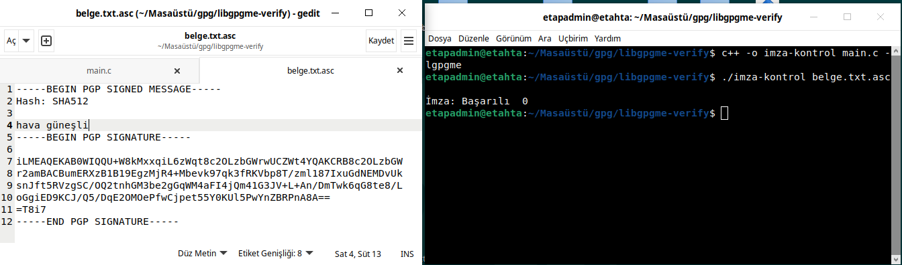
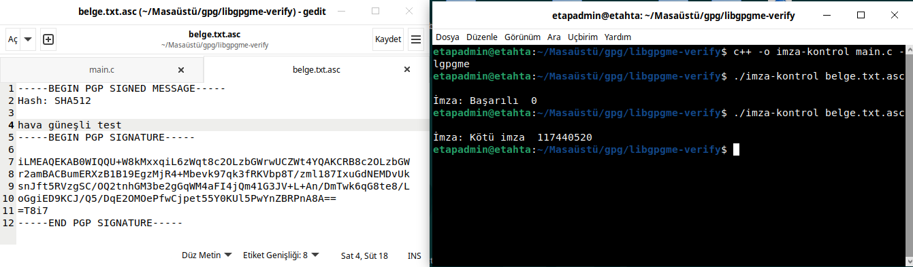
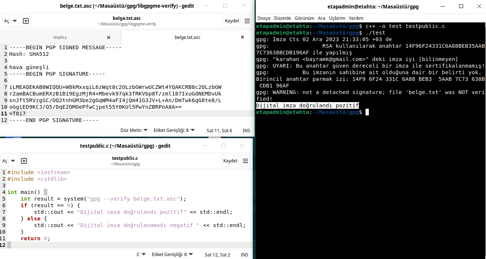
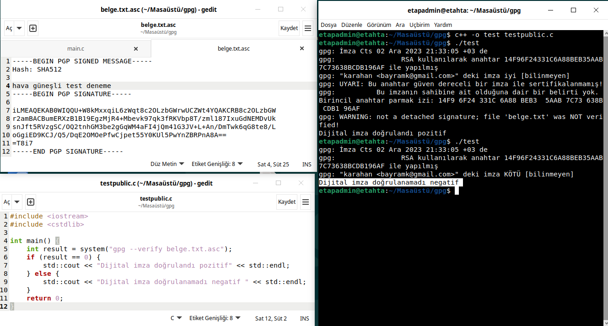

İmza Doğrulama¶
GPG (GNU Privacy Guard), dosyaların ve iletişimin güvenliğini sağlamak için kullanılan bir şifreleme aracıdır. Bu araçla, dosyaları şifreleyebilir, imzalayabilir ve imzaları doğrulayabiliriz.
İmza Oluşturma¶
GPG ile anahtar oluşturmak oldukça basittir. İşte adım adım nasıl yapılacağı: İlk olarak, GPG yazılımını sisteminize yüklemeniz gerekmektedir. Linux tabanlı bir işletim sistemi kullanıyorsanız, terminali açın ve aşağıdaki komutu çalıştırın ve GPP kururlumunu yapınız.
language-bash
sudo apt-get install gnupg
GPG anahtar çiftini oluşturmak için aşağıdaki komutu kullanın:
language-bash
gpg --full-generate-key
Belge İmzalama¶
Anahtar çifti oluşturulduktan sonra, imzalamak istediğiniz belgeyi seçin ve aşağıdaki komutu kullanarak belgeyi imzalayın:
language-bash
gpg --sign belge.txt
İmzalanan belge, aynı dizinde "belge.txt.asc" uzantısıyla kaydedilecektir. Bu imzalı belgeyi başkalarıyla paylaşabilirsiniz.
İmzalı Belge Doğrulama¶
İmzalı belgeyi doğrulamak istediğinizde, aşağıdaki komutu kullanarak GPG'yi kullanabilirsiniz:
language-bash
gpg --verify belge.txt.asc
Bu komut, belgenin doğruluğunu kontrol edecek ve imzanın geçerli olup olmadığını size bildirecektir. İmza doğrulama işlemleri daha detaylı bir şekilde aşağıda anlatılmıştır.
bash ile Doğrulama¶
bash script ile imza doğrulaması aşağıdaki kodlarla yapılabilir.
#!/bin/bash
file=$1
if [ $file == "" ]
then
echo "Dosya belirtiniz."
else
gpg --verify "$file"
status=$?
if [ "$status" == "0" ]
then
echo "İmza İyi"
else
echo "İmza Kötü"
fi
fi
{kind=link}
c++ ile Doğrulama¶
c kullanarak özünde bash komutunu sonucunu kontrol eden imza doğrulaması aşağıdaki kodlarla yapılabilir.
 {kind=link}
{kind=link}
#include <iostream> #include <cstdlib>
- int main() {
int result = system("gpg --verify belge.txt.asc"); if (result == 0) {
std::cout << "Dijital imza doğrulandı pozitif" << std::endl;
- } else {
std::cout << "Dijital imza doğrulanamadı negatif " << std::endl;
} return 0;
}
 {kind=link}
{kind=link}
c++ libgpgme ile Doğrulama¶
libgpgme kütüphanalerini kullanarak bir belge doğrulama yapabiliriz.
#include <stdio.h>
#include <gpgme.h>
#include <locale.h>
#include <stdlib.h>
#include <string.h>
int print_engine_info() {
gpgme_engine_info_t info;
gpgme_error_t err;
err = gpgme_get_engine_info(&info);
if (err != GPG_ERR_NO_ERROR) {
fprintf(stderr, "ERROR: Filed to get engine info!\n");
return -1;
}
printf( "Installed engines: {\n" );
while(info != NULL) {
printf( "\t* %s Protocol=%s Version=%s Required-Version=%s Home=%s\n",
info->file_name, gpgme_get_protocol_name(info->protocol),
info->version, info->req_version, info->home_dir );
info = info->next;
}
printf("}\n");
return 0;
}
int main(int argc, const char* argv[]) {
const char *gpgme_version, *gpgme_prot;
gpgme_error_t err;
gpgme_ctx_t ctx;
FILE *fp_sig=NULL, *fp_msg=NULL;
gpgme_data_t sig=NULL, msg=NULL, plain=NULL, text=NULL;
gpgme_verify_result_t result;
gpgme_protocol_t protocol = GPGME_PROTOCOL_OpenPGP;
/* GPGME version check and initialization */
setlocale(LC_ALL, "");
gpgme_version = gpgme_check_version(GPGME_VERSION); // developed for 1.5.1
if (!gpgme_version) {
fprintf(stderr, "ERROR: Wrong library on target! Please "
"install at least version %s!\n", GPGME_VERSION);
exit(1);
}
gpgme_set_locale(NULL, LC_CTYPE, setlocale(LC_CTYPE, NULL));
#ifdef LC_MESSAGES
gpgme_set_locale(NULL, LC_MESSAGES, setlocale(LC_MESSAGES, NULL));
#endif
/* Protocol check */
gpgme_prot = gpgme_get_protocol_name(protocol);
err = gpgme_engine_check_version(protocol);
if (!gpgme_prot || err != GPG_ERR_NO_ERROR) {
fprintf(stderr, "ERROR: libgpgme lacks of OpenPGP protocol!\n");
print_engine_info();
exit(1);
}
fp_sig = fopen(argv[1], "rb");
if (!fp_sig) {
fprintf(stderr, "ERROR: Failed to open '%s'!\n", argv[0]);
exit(1);
}
if (argc > 2)
{
fp_msg = fopen(argv[2], "rb");
if (!fp_msg)
{
fprintf(stderr, "ERROR: Failed to open '%s'!\n", argv[1]);
exit(1);
}
}
err = gpgme_new(&ctx);
if (err !=GPG_ERR_NO_ERROR) {
char buf[4096];
gpgme_strerror_r(err, buf, 4096);
fprintf(stderr, "ERROR: %s\n", buf);
exit(1);
}
gpgme_set_protocol(ctx, protocol);
err = gpgme_data_new_from_stream(&sig, fp_sig);
if (err) {
fprintf(stderr, "ERROR allocating data object: %s\n", gpgme_strerror(err));
exit(1);
}
if (fp_msg)
{
err = gpgme_data_new_from_stream(&msg, fp_msg);
if (err) {
fprintf(stderr, "ERROR allocating data object: %s\n", gpgme_strerror(err));
exit(1);
}
printf("Loaded message from '%s'\n", argv[2]);
}
else
{
err = gpgme_data_new(&plain);
if (err) {
fprintf(stderr, "ERROR allocating data object: %s\n", gpgme_strerror(err));
exit(1);
}
///printf("Allocated 'plain' data\n");
}
err = gpgme_op_verify(ctx, sig, msg, plain);
if (err)
{
fprintf(stderr, "ERROR: signing failed: %s\n", gpgme_strerror(err));
exit(1);
}
result = gpgme_op_verify_result(ctx);
int count = 0;
if (result) {
gpgme_signature_t sig;
for(sig = result->signatures; sig; sig = sig->next)
{
count += 1;
if ( !(sig->summary & GPGME_SIGSUM_VALID) ) {
printf("İmza: %s %d\n",gpgme_strerror(sig->status),sig->status);
exit(1);
}
}
}
if (count < 1) {
printf( "Error: Cannot find matching signature!\n" );
return 1;
}
printf( "\nSignature verfication successful. Plaintext:\n" );
text = plain ? plain : msg;
gpgme_data_seek(text, 0, SEEK_SET);
size_t bytes;
do {
char buffer[256];
bytes = gpgme_data_read(text, buffer, 256-1);
buffer[bytes] = '\0';
printf( "%s", buffer );
} while( bytes > 0 );
gpgme_data_release(plain);
gpgme_data_release(msg);
gpgme_data_release(sig);
gpgme_release(ctx);
return 0;
}